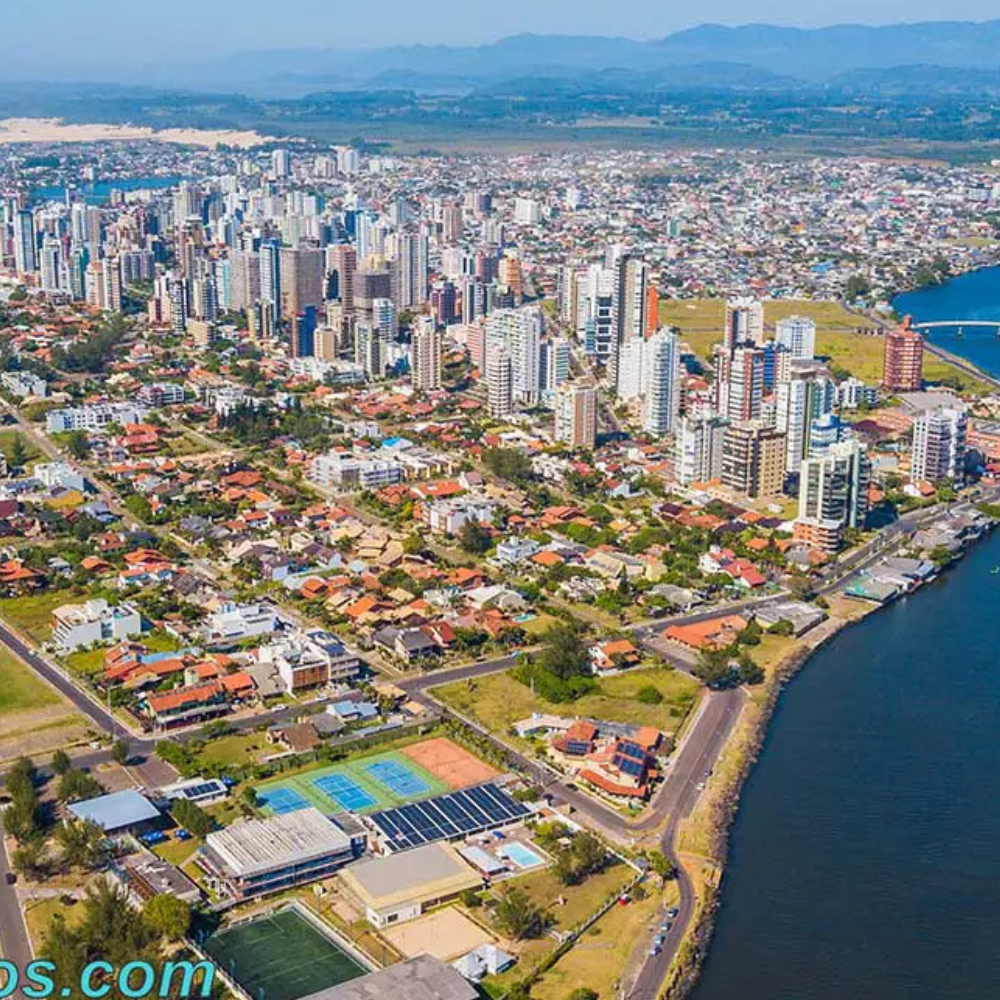

O Rio Grande do Sul pertence à Região Sul do Brasil e sua capital é Porto Alegre.O estado destaca-se por sua forte identidade cultural ligada à tradição gaúcha, ao churrasco e ao chimarrão, além de possuir marcas profundas da imigração europeia, principalmente de alemães e italianos. Economicamente, é um dos principais polos agroindustriais do país e um grande produtor de vinhos, grãos e calçados, apresentando também destinos turísticos de destaque nacional na Serra Gaúcha

Voltar